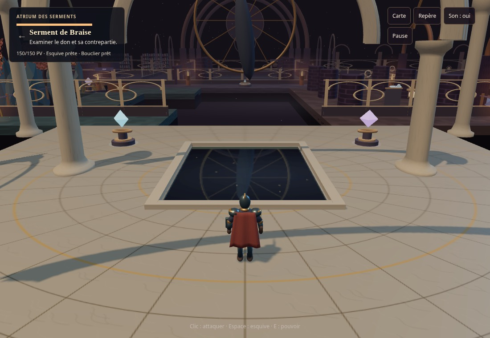
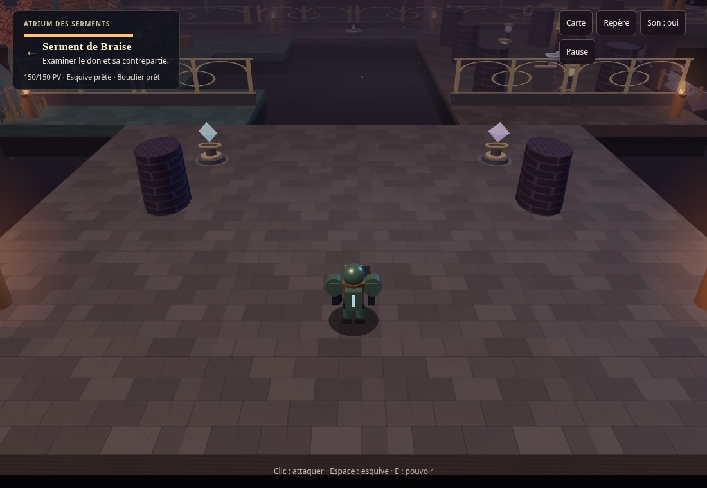

Les Royaumes de l’Éclipse
Le parvis, avant et après.
Versions 0.11 et 0.12, au même point de départ. La nouvelle version change le héros, ses animations, le cadrage et la construction de la cour.


Avant · 0.11Après · 0.12Captures réelles du moteur dans Chromium, sans retouche. Qualité maximale de chaque version sur PC ; qualité Légère sur téléphone simulé. Chaque version conserve son propre cadrage. Le rendu et la fluidité sur téléphone réel restent à vérifier.
Cette passe transforme le parvis et les deux héros. Le reste du niveau conserve la progression, les épreuves et les sauvegardes précédentes.